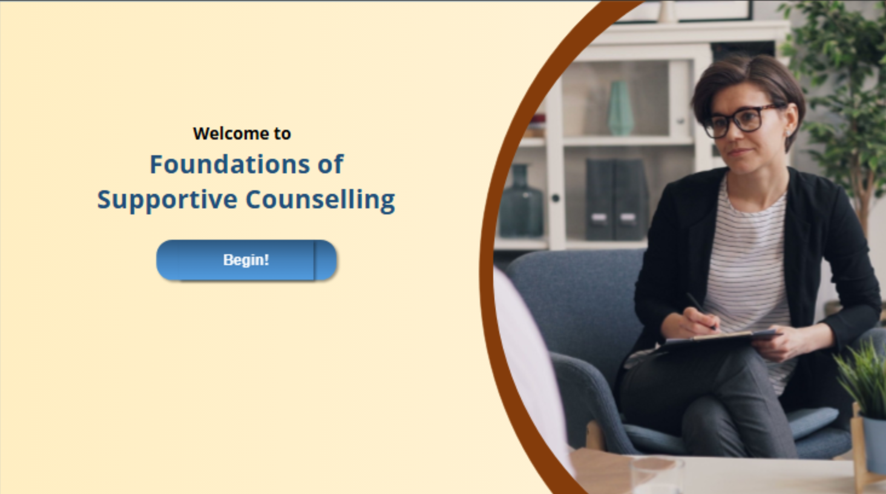
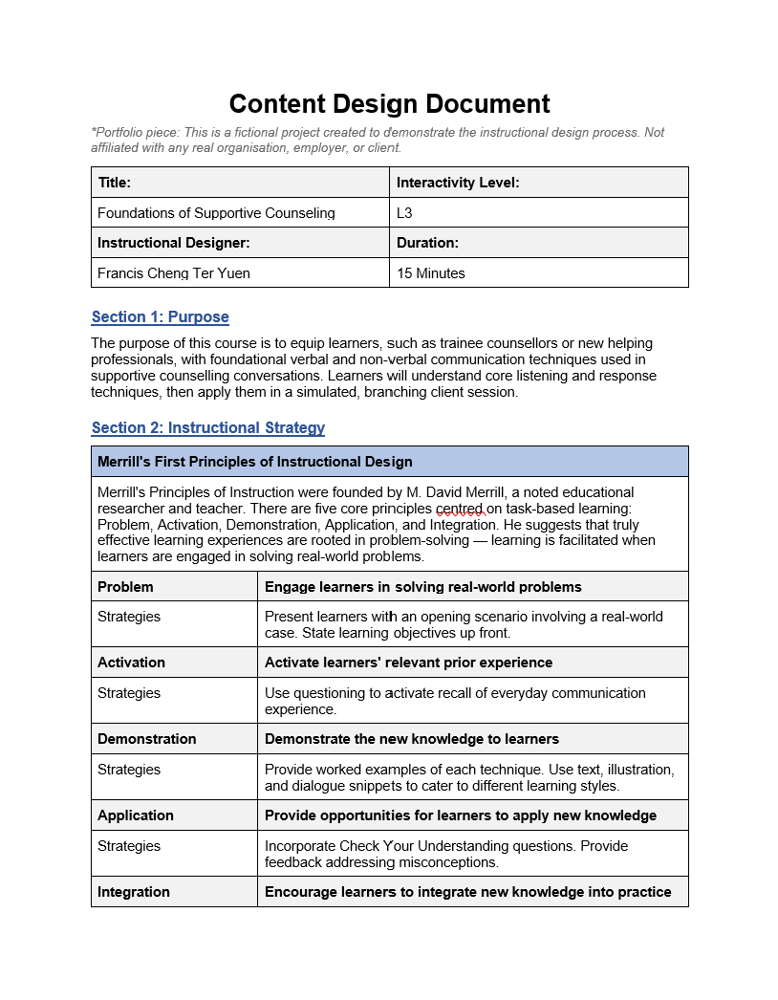
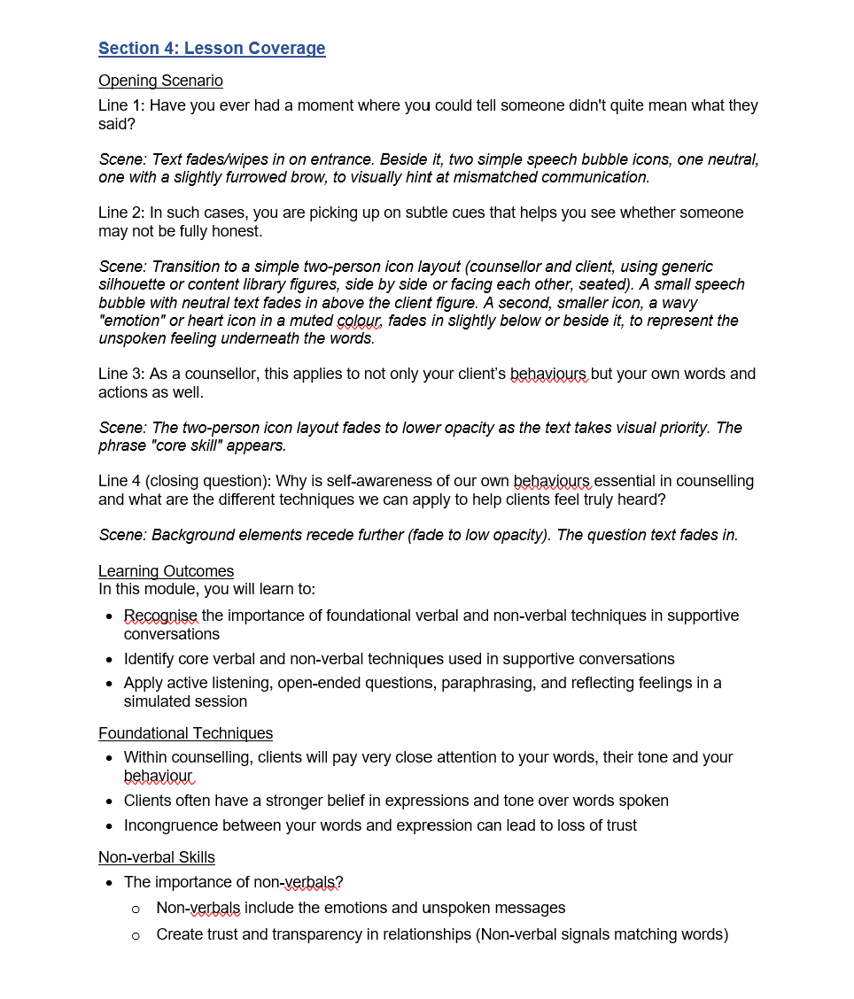
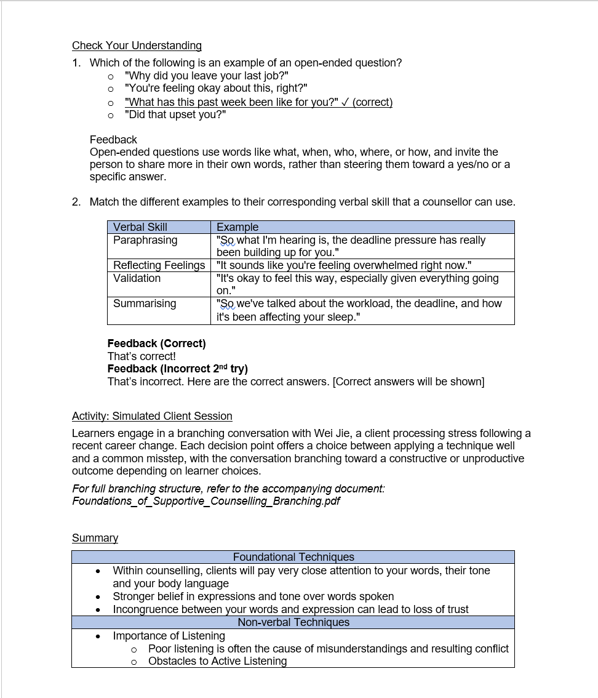
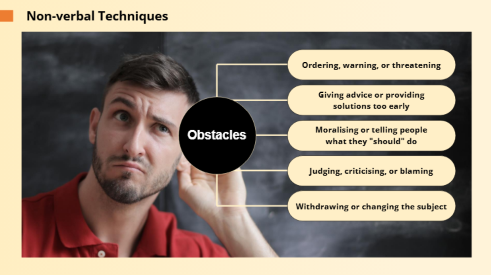
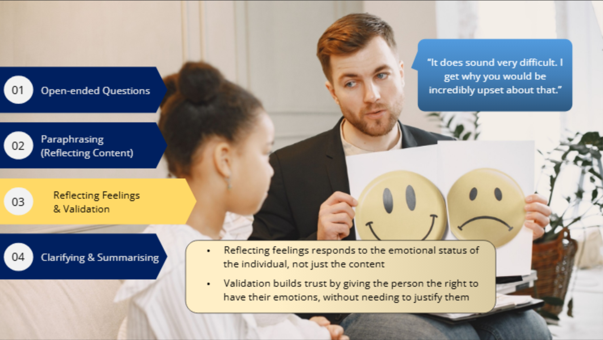
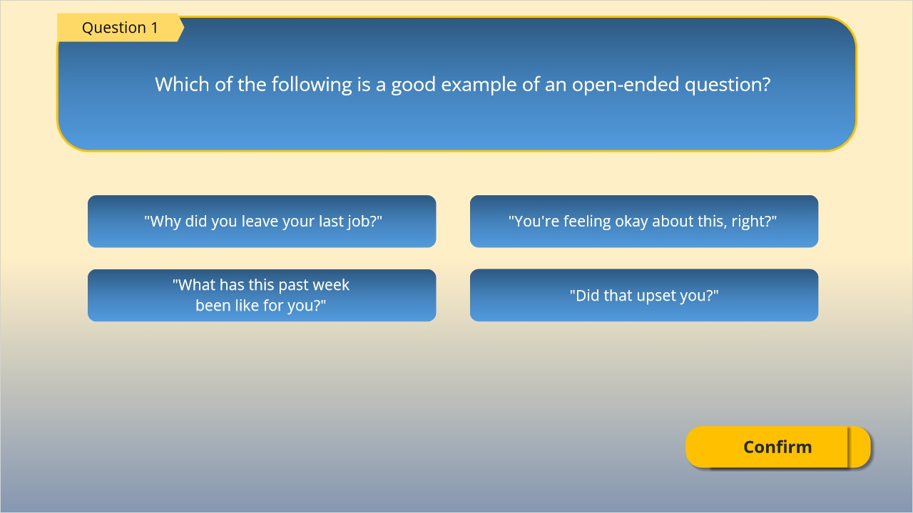
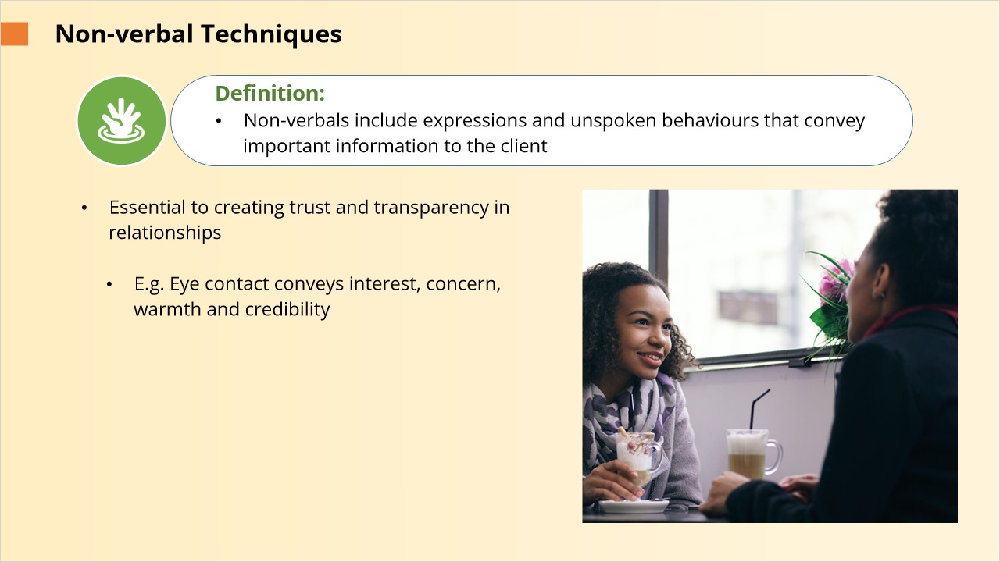
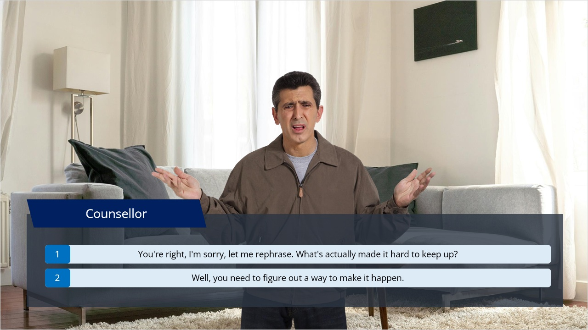

Case Study
An eLearning module showcasing a full branching counselling simulation, built stage by stage through the ADDIE model. This portfolio work is built to demonstrate how the module will be designed from the first SME conversation to the finished Storyline build.

Launch the module Interactive module · opens in a new tabThe ADDIE Process
As part of the first phase, this is my systematic curriculum approach:
Learning objectives are framed using Bloom's Taxonomy, so each one describes a skill the learner will learn how to do.
An overall workflow will then be designed and, with the rest of the gathered information, mapped into a Curriculum Design Document (CDD) which helps the SME have an overall view of the full flow of the course before a single slide is built.



The CDD will be translated into a storyboard. The storyboard will show every screen with its corresponding narration so the structure, pacing, and content can be reviewed before any branching or triggering logic goes in.





Instructions are often written to explain any slide or activity movement or how animations are paired with narrations. It is important to review the content, activities and assessments at this stage thoroughly before the module is fully actualised. Other important details that should be finalised at this stage are the general design style and avatars as they may be used widely during actualisation and will be harder to change.
Once the storyboard has been cleared, the module gets built for real. The variables, triggers, and branching logic will be wired up in Storyline, alongside work with graphic designers and stock or custom assets to give the module its final visual look.
Launch the module Interactive module · opens in a new tabFinally, the module goes live: working with the SME to place it on their LMS, then testing it with real learners to check whether it actually changes how they perform. If the received feedback is consistent among students, a meeting may be scheduled with the SMEs to determine how to improve the content to address it.